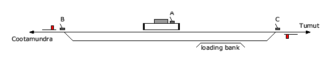

Wambidgee Railway Station
Bongalong
Coolac
Main facility:
Station
Status:
Closed
Lines:
Tumut Branch
Location:
Lat/long: (148.1219°, -34.8725°)
Distance:
From Sydney: 458.595 km
From Jct (Tumut Branch): unknown
History:
10-Oct-1892
Opened as Mooney Mooney
3-Jan-1893
Renamed Mooni Mooni
21-Mar-1908
Moved site
28-Nov-1907
Renamed Wambidgee
4-May-1975
Closed
Description:
Not available
Current status:
Not available
Diagrams:
Layout - 1913

Photographs: